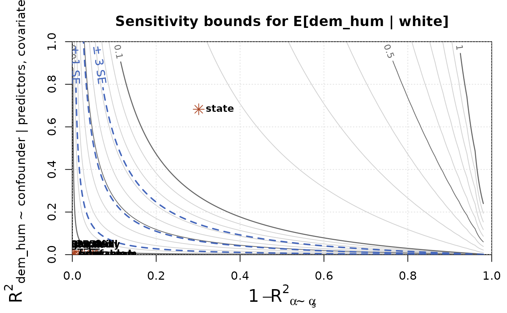

Ecological inference (EI) is the statistical problem of learning individual-level associations from aggregate-level data. EI commonly arises when two datasets are joined using a shared geographic identifier, and when individual data are not released for privacy reasons. To take some recent examples from the New York Times:
- Estimating COIVD vaccine uptake by political beliefs
- Understanding which demographics supported a progressive mayoral candidate
- Evaluating the differential impact of tariffs on political partisans
EI is also used in public health and epidemiology, and is widely applied in litigation under the federal Voting Rights Act of 1965 (VRA) to establish the presence of racially polarized voting.
Preparing data
As an example of an ecological analysis, we will use the
elec_1968 data included in the package. The data contain
county-level election returns from Southern states in the 1968 U.S.
presidential election along with a number of covariates taken from the
1970 U.S. census. The counties here are the aggregation
units; in other analyses, states, precincts, or cities might be
the aggregation units.
library(seine)
data(elec_1968)
print(elec_1968)
#> # A tibble: 1,143 × 41
#> fips state abbr region division county pop pop_city pop_urban pop_rural
#> <chr> <chr> <chr> <chr> <chr> <chr> <dbl> <dbl> <dbl> <dbl>
#> 1 01001 Alaba… AL South East So… Autau… 24460 0 0.536 0.464
#> 2 01003 Alaba… AL South East So… Baldw… 59382 0 0.266 0.734
#> 3 01005 Alaba… AL South East So… Barbo… 22543 0 0.404 0.596
#> 4 01007 Alaba… AL South East So… Bibb … 13812 0 0 1
#> 5 01009 Alaba… AL South East So… Bloun… 26853 0 0.163 0.837
#> 6 01011 Alaba… AL South East So… Bullo… 11824 0 0.366 0.634
#> 7 01013 Alaba… AL South East So… Butle… 22007 0 0.365 0.635
#> 8 01015 Alaba… AL South East So… Calho… 103092 0 0.641 0.359
#> 9 01017 Alaba… AL South East So… Chamb… 36356 0 0.437 0.563
#> 10 01019 Alaba… AL South East So… Chero… 15606 0 0 1
#> # ℹ 1,133 more rows
#> # ℹ 31 more variables: pop_white <dbl>, pop_black <dbl>, pop_aian <dbl>,
#> # pop_asian <dbl>, pop_hisp <dbl>, vap <dbl>, vap_white <dbl>,
#> # vap_black <dbl>, vap_other <dbl>, farm <dbl>, nonfarm <dbl>,
#> # educ_elem <dbl>, educ_hsch <dbl>, educ_coll <dbl>, cvap <dbl>,
#> # cvap_white <dbl>, cvap_black <dbl>, cvap_other <dbl>, inc_00_03k <dbl>,
#> # inc_03_08k <dbl>, inc_08_25k <dbl>, inc_25_99k <dbl>, pres_dem_hum <dbl>, …We are interested in estimating the individual-level association
between race and presidential vote choice. The outcome
variables are the proportion of votes cast for each candidate:
pres_dem_hum, pres_rep_nix,
pres_ind_wal, and pres_abs, where the latter
are abstentions and ballots cast for other candidates. The
predictor variables are the proportions of the
voting-age population in each racial group: vap_white,
vap_black, and vap_other. The data also
contain a number of covariates, such as education and
income, which we discuss below.
Ideally, these would be the proportion of each racial group within the population that actually cast a ballot for President. Since those proportions are unobserved, they would have to be estimated using a first stage of ecological inference with an outcome variable measuring turnout. Alternatively, one could include non-voters as another category of outcome variable, so that both outcome and predictor variables are proportions relative to the total voting-age population. For demonstration purposes, we will ignore this issue and proceed as if turnout were uniform across racial groups in every county.
These data have already been cleaned. Often, outcomes and predictors
are measured as counts, or may have been rounded, so that they do not
sum to exactly 1. seine provides the
ei_proportions() function to assist in preprocessing. To
see this in action, suppose we wanted to set up the turnout problem
mentioned in the previous paragraph. The ei_proportions()
function would let us create a new turnout proportion variable from our
existing data.
elec_1968_turn = ei_proportions(elec_1968, turnout = pres_total,
.total = vap, clamp = 0.01)
subset(elec_1968_turn, select = c(fips, state, county, turnout, vap, .other))
#> # A tibble: 1,143 × 6
#> fips state county turnout vap .other
#> <chr> <chr> <chr> <dbl> <dbl> <dbl>
#> 1 01001 Alabama Autauga County 0.606 12744 0.394
#> 2 01003 Alabama Baldwin County 0.568 33012 0.432
#> 3 01005 Alabama Barbour County 0.645 12370 0.355
#> 4 01007 Alabama Bibb County 0.601 7575 0.399
#> 5 01009 Alabama Blount County 0.566 15856 0.434
#> 6 01011 Alabama Bullock County 0.721 6019 0.279
#> 7 01013 Alabama Butler County 0.593 12341 0.407
#> 8 01015 Alabama Calhoun County 0.484 55547 0.516
#> 9 01017 Alabama Chambers County 0.504 21117 0.496
#> 10 01019 Alabama Cherokee County 0.614 9215 0.386
#> # ℹ 1,133 more rowsThe function normalizes pres_total by vap
and stores the result in a column labeled turnout. It also
stores the remaining proportion (i.e., the non-voters) in the
.other column, by default. In this data, there is one
county which had higher turnout than 1970 VAP. The
clamp = 0.01 argument tells ei_proportions()
to allow that kind of excess up to 1% of the total, and round those
proportions down to 1. Any proportions in excess of 1.01 would throw an
error. You can read about other functionality and customization of
ei_proportions() in the function’s documentation.
Avoiding the ecological fallacy
The core challenge of ecological inference is that only marginal proportions are observed (racial groups, candidate vote shares), but we are interested in joint data (candidate vote shares within each racial group). The key to overcoming this challenge is assuming some kind of homogeneity across aggregation units. Enough homogeneity means that information can be shared across aggregation units to estimate the missing joint proportions.
More precisely, a researcher needs to believe that coarsening at random (CAR) holds in order to conduct EI. Coarsening at random means that unobserved joint data of interest are mean-independent of the predictors and the number of people in each aggregation unit, given covariates.1
In these data, CAR means that once we know a set of covariate values for a county, such as its education and age, learning about the racial composition of the county does not change our beliefs about the candidate preference within each racial group or the total turnout.
For example, take the three counties shown below, which have been selected by a clustering algorithm to be similar on the observed covariates: urbanity, agriculture, education, and income.
| state | county | pop_urban | farm | educ_elem | educ_hsch | educ_coll | inc_00_03k | inc_03_08k | inc_08_25k | inc_25_99k |
|---|---|---|---|---|---|---|---|---|---|---|
| Virginia | Charles City County | 0 | 0.0409 | 0.5401 | 0.3669 | 0.0930 | 0.1778 | 0.4486 | 0.3570 | 0.0166 |
| Virginia | Greene County | 0 | 0.0737 | 0.5827 | 0.3517 | 0.0656 | 0.1736 | 0.3832 | 0.4368 | 0.0064 |
| Virginia | Louisa County | 0 | 0.0620 | 0.5300 | 0.3964 | 0.0736 | 0.1823 | 0.4200 | 0.3814 | 0.0163 |
CAR means that the preference for, e.g., George Wallace among White voters in these counties is roughly the same and is unrelated to the fact that the demographics are quite different between the counties:
| state | county | vap_white | vap_black | vap_other | pres_total |
|---|---|---|---|---|---|
| Virginia | Charles City County | 0.2138 | 0.7000 | 0.0862 | 1960 |
| Virginia | Greene County | 0.9073 | 0.0917 | 0.0010 | 1549 |
| Virginia | Louisa County | 0.6669 | 0.3318 | 0.0014 | 3964 |
If we believed that in the majority-Black Charles City County, racial resentment might increase the preference for Wallace compared to the heavily majority-White Greene County, then CAR would be violated.
For now, we will proceed under the CAR assumption, though there are serious reasons to doubt its applicability in these data. Later, we’ll discuss how to conduct a sensitivity analysis to evaluate how possible violations might affect our conclusions.
Ecological estimation
Once we’ve evaluated the CAR assumption, we can proceed with estimation. seine implements double/debiased machine learning (DML), which means we fit two models before combining them for a final estimate:
- A regression model of the outcome variables on the predictor variables and covariates
- A Riesz representer model, which yields a special set of “weights” that can be used in estimation.
By carefully combining the fitted regression and Riesz representer, we can reduce the sensitivity to biases in each component.
Setup
seine provides both a formula interface and a tidy
interface through a new ei_spec() object. We recommend the
ei_spec() approach for most analyses, since it dovetails
well with the other estimation and sensitivity functions. We will
demonstrate both approaches here, however.
To create an EI specification, we call
ei_spec() and use tidyselect syntax to specify
the outcome, predictors, covariates, and the column with the total
number of people in each aggregation unit.
spec = ei_spec(
elec_1968,
predictors = vap_white:vap_other,
outcome = pres_dem_hum:pres_abs,
total = pres_total,
covariates = c(state, pop_city:pop_rural, farm:educ_coll,
inc_00_03k:inc_25_99k)
)
print(spec)
#> EI Specification
#> • Predictors: `vap_white`, `vap_black`, and `vap_other`
#> • Outcome: `pres_dem_hum`, `pres_rep_nix`, `pres_ind_wal`, and `pres_abs`
#> • Covariates: `state`, `pop_city`, `pop_urban`, `pop_rural`, `farm`, `nonfarm`, `educ_elem`, `educ_hsch`, `educ_coll`, `inc_00_03k`, `inc_03_08k`, `inc_08_25k`, and `inc_25_99k`
#> # A tibble: 1,143 × 20
#> vap_white vap_black vap_other pres_dem_hum pres_rep_nix pres_ind_wal pres_abs
#> <dbl> <dbl> <dbl> <dbl> <dbl> <dbl> <dbl>
#> 1 0.761 0.237 0.00173 0.199 0.0773 0.711 0.0122
#> 2 0.860 0.137 0.00306 0.105 0.115 0.764 0.0161
#> 3 0.610 0.389 0.000808 0.242 0.0489 0.687 0.0218
#> 4 0.783 0.216 0.00106 0.141 0.0571 0.799 0.00290
#> 5 0.981 0.0181 0.000757 0.0375 0.222 0.727 0.0134
#> # ℹ 1,138 more rows
#> # ℹ 13 more variables: state <chr>, pop_city <dbl>, pop_urban <dbl>,
#> # pop_rural <dbl>, farm <dbl>, nonfarm <dbl>, educ_elem <dbl>,
#> # educ_hsch <dbl>, educ_coll <dbl>, inc_00_03k <dbl>, inc_03_08k <dbl>,
#> # inc_08_25k <dbl>, inc_25_99k <dbl>An ei_spec object is just a data frame with some
additional metadata about these variables.
Fitting the regression
Any machine learning method can be used to fit the regression model.
However, due to the aggregation process that led to our data, there is
certain structure in the regression function that can be leveraged for
improved estimation. We recommend using ei_ridge() to fit
the regression model, because it will automatically use this structure,
and automatically determine the ridge penalty using a closed-form
expression for the leave-one-out errors. To make the regression
nonparametric, basis expansions such as kernel functions, polynomials,
or splines can be used. The bases
package and the built-in splines package provide functions
that carry out these expansions and can be used inside model
formulas.
Using the tidy interface, fitting the regression is as simple as
calling ei_ridge() on the ei_spec object:
m = ei_ridge(spec)
print(m)
#> An ecological inference model with 4 outcomes, 3 groups, and 1143 observations
#> Fit with penalty = 0.0432704We can see that ei_ridge() has automatically selected a
small ridge penalty. By default, all covariates are centered and scaled
to have unit variance. This is generally appropriate when penalizing all
coefficients equally, as is done by ei_ridge(). But in some
cases it may not be appropriate, and this behavior can be suppressed by
providing scale = FALSE.
Alternatively, we could use the formula interface, which would also
let us specify our own interaction terms; here, we interact
state with all other variables. Formulas in
seine require the user separate the predictors and
covariates by a vertical bar.
m_form = ei_ridge(
cbind(pres_dem_hum, pres_rep_nix, pres_ind_wal, pres_abs) ~
vap_white + vap_black + vap_other |
state * (pop_urban + pop_rural + farm + educ_hsch + educ_coll +
inc_03_08k + inc_08_25k + inc_25_99k),
data = elec_1968, total = pres_total
)
print(m_form)
#> An ecological inference model with 4 outcomes, 3 groups, and 1143 observations
#> Fit with penalty = 5.22561The summary() method of fitted regression objects shows
summary statistics for fitted values, which can help diagnose
misspecification, and shows the \(R^2\)
values for each outcome variable. Here, racial demographics and
covariates explain a substantial amount of the total variation in vote
shares. The fitted values are almost all between 0 and 1, but the
presence of some negative predictions indicates there is at least some
model misspecification.
summary(m)
#> Fitted values:
#> pres_dem_hum pres_rep_nix pres_ind_wal pres_abs
#> Min. :0.01289 Min. :-0.0296 Min. :-0.01479 Min. :-0.0012395
#> 1st Qu.:0.23672 1st Qu.: 0.1911 1st Qu.: 0.26210 1st Qu.:-0.0001323
#> Median :0.29178 Median : 0.3110 Median : 0.37332 Median : 0.0001229
#> Mean :0.30163 Mean : 0.2970 Mean : 0.40004 Mean : 0.0013323
#> 3rd Qu.:0.37902 3rd Qu.: 0.3890 3rd Qu.: 0.53561 3rd Qu.: 0.0005280
#> Max. :0.70426 Max. : 0.6481 Max. : 0.84246 Max. : 0.0142096
#>
#> R-squared by outcome:
#> pres_dem_hum pres_rep_nix pres_ind_wal pres_abs
#> 0.6880171 0.7165231 0.8114222 0.5441581Fitting the Riesz representer
The Riesz representer is less familiar, but no less easy to fit.
Using the tidy interface, we simply pass the ei_spec object
to ei_riesz(). Unlike ei_ridge(),
ei_riesz() requires a penalty to be specified. A good
default is to use the same penalty as was used in the regression.
rr = ei_riesz(spec, penalty = m$penalty)We could also use the formula interface. It is critical to provide
exactly the same formula and data to both ei_ridge() and
ei_riesz() (though the Riesz representer does not use the
outcome variable); the tidy interface obviates the need to worry about
this.
rr_form = ei_riesz(
~ vap_white + vap_black + vap_other |
state * (pop_urban + pop_rural + farm + educ_hsch + educ_coll +
inc_03_08k + inc_08_25k + inc_25_99k),
data = elec_1968, total = pres_total, penalty = m_form$penalty
)As with the regression model, the summary() function
provides useful information for evaluating the Riesz representer.
summary(rr)
#> Second moment of representer:
#> vap_white vap_black vap_other
#> 15.01799 228.39141 103472.19420
#>
#> Second moment of representer (leave-one-out):
#> vap_white vap_black vap_other
#> 17.25841 257.75390 144881.23787Large second moments of the Riesz representer are indicative of a
more difficult EI problem, likely due to limited variation in the
predictor, given covariates. Here we see that there is very little
information for the other group, and the representer is
highly variable. Comparing the in-sample and leave-one-out second
moments can also help identify cases of possible overfitting, where a
higher penalty may be useful.
DML for ecological estimates
With the regression function and Riesz representer now fitted, we are
ready to combine them to estimate our quantities of interest: vote
choice by race. This is accomplished with the ei_est()
function, which takes in both fitted models and the original
ei_spec object, and returns a tidy data frame of estimates.
The conf_level argument is optional and produces confidence
intervals of the specified width from the asymptotic Normal
approximation.
est = ei_est(m, rr, spec, conf_level = 0.95)
print(est)
#> # A tibble: 12 × 6
#> predictor outcome estimate std.error conf.low conf.high
#> <chr> <chr> <dbl> <dbl> <dbl> <dbl>
#> 1 vap_white pres_dem_hum 0.225 0.0241 0.178 0.273
#> 2 vap_black pres_dem_hum 0.584 0.0601 0.467 0.702
#> 3 vap_other pres_dem_hum 2.92 0.744 1.46 4.38
#> 4 vap_white pres_rep_nix 0.435 0.0365 0.363 0.506
#> 5 vap_black pres_rep_nix -0.0242 0.0367 -0.0963 0.0478
#> 6 vap_other pres_rep_nix -4.75 0.991 -6.69 -2.80
#> 7 vap_white pres_ind_wal 0.339 0.0197 0.300 0.377
#> 8 vap_black pres_ind_wal 0.437 0.0436 0.351 0.522
#> 9 vap_other pres_ind_wal 2.84 0.840 1.20 4.49
#> 10 vap_white pres_abs 0.00145 0.000384 0.000691 0.00220
#> 11 vap_black pres_abs 0.00314 0.00111 0.000955 0.00532
#> 12 vap_other pres_abs -0.0186 0.0265 -0.0706 0.0334The same call works with the formula interface.
est_form = ei_est(m_form, rr_form, elec_1968)Occasionally, it is helpful to examine the estimates in a different
format. The as.matrix() method works on ei_est
objects and can be used on any column of the object, such as the
estimate or standard error. The full (asymptotic) covariance matrix of
all estimates is also accessible via vcov().
as.matrix(est)
#> outcome
#> predictor pres_dem_hum pres_rep_nix pres_ind_wal pres_abs
#> vap_white 0.2253004 0.43469163 0.3385627 0.001445307
#> vap_black 0.5844989 -0.02422778 0.4365898 0.003139145
#> vap_other 2.9232285 -4.74841187 2.8437828 -0.018599469
as.matrix(est, which = "conf.low")
#> outcome
#> predictor pres_dem_hum pres_rep_nix pres_ind_wal pres_abs
#> vap_white 0.1780393 0.36310751 0.2998458 0.0006909335
#> vap_black 0.4665612 -0.09625072 0.3511356 0.0009548326
#> vap_other 1.4642962 -6.69250655 1.1953827 -0.0706095646Sometimes, estimates within a set of geographies are of interest. The
subset= argument to ei_est() allows for
producing estimates in these smaller areas.
as.matrix(ei_est(m, rr, spec, subset = (state == "Mississippi")))
#> outcome
#> predictor pres_dem_hum pres_rep_nix pres_ind_wal pres_abs
#> vap_white 0.002209141 0.19864269 0.7995612 -0.000413015
#> vap_black 0.738043281 0.01895925 0.2413356 0.001661887
#> vap_other 1.405217200 -2.76253073 2.3609276 -0.003614053Finally, ei_est() actually also works with a regression
model alone, or a Riesz representer alone. However, these estimates are
not debiased, and may have higher error. They generally have improperly
calibrated confidence intervals.
Sensitivity analysis
The entire analysis so far has rested on the critical CAR assumption. In practice, no such independence assumption ever holds exactly. Thus, it is important to evaluate how sensitive the results are to violations of that identifying assumption.
seine provides a number of tools to do this. All are based on a nonparametric sensitivity framework developed by Chernozhukov et al. (2024). This framework considers the relationship between an unobserved confounding variable and the outcome and predictors, measured in terms of certain partial \(R^2\) values. Essentially, the stronger the relationship, the more confounding is present and the more biased the original estimates are.
The ei_sens() function provides a simple interface to
this framework. Users provide values for sensitivity parameters, and a
bound on the absolute bias is returned. In the following example, we
investigate the effect of an omitted confounder that explains 50% of the
residual variation in the outcome and 20% of the variation in the Riesz
representer, compared to the true representer.
ei_sens(est, c_outcome = 0.5, c_predictor = 0.2)
#> # A tibble: 12 × 9
#> predictor outcome estimate std.error conf.low conf.high c_outcome c_predictor
#> <chr> <chr> <dbl> <dbl> <dbl> <dbl> <dbl> <dbl>
#> 1 vap_white pres_d… 0.225 0.0241 7.51e-2 0.375 0.5 0.2
#> 2 vap_black pres_d… 0.584 0.0601 9.77e-2 1.07 0.5 0.2
#> 3 vap_other pres_d… 2.92 0.744 -9.98e+0 15.8 0.5 0.2
#> 4 vap_white pres_r… 0.435 0.0365 2.44e-1 0.626 0.5 0.2
#> 5 vap_black pres_r… -0.0242 0.0367 -5.24e-1 0.476 0.5 0.2
#> 6 vap_other pres_r… -4.75 0.991 -2.00e+1 10.5 0.5 0.2
#> 7 vap_white pres_i… 0.339 0.0197 1.72e-1 0.505 0.5 0.2
#> 8 vap_black pres_i… 0.437 0.0436 -1.06e-1 0.979 0.5 0.2
#> 9 vap_other pres_i… 2.84 0.840 -1.30e+1 18.7 0.5 0.2
#> 10 vap_white pres_a… 0.00145 0.000384 -3.79e-3 0.00668 0.5 0.2
#> 11 vap_black pres_a… 0.00314 0.00111 -1.51e-2 0.0214 0.5 0.2
#> 12 vap_other pres_a… -0.0186 0.0265 -5.69e-1 0.532 0.5 0.2
#> # ℹ 1 more variable: bias_bound <dbl>We can also work backwards and ask what one of the sensitivity
parameters would have to be in order to produce a certain amount of
bias. For example, if we assumed a worst-case scenario where the
confounder explains the entire outcome (c_outcome = 1), we
can ask how strongly that confounder would need to be related to the
Riesz representer to produce a bias of up to 5pp.
ei_sens(est, c_outcome = 1, bias_bound = 0.05)
#> # A tibble: 12 × 9
#> predictor outcome estimate std.error conf.low conf.high c_outcome c_predictor
#> <chr> <chr> <dbl> <dbl> <dbl> <dbl> <dbl> <dbl>
#> 1 vap_white pres_d… 0.225 0.0241 0.128 0.323 1 0.0287
#> 2 vap_black pres_d… 0.584 0.0601 0.417 0.752 1 0.00229
#> 3 vap_other pres_d… 2.92 0.744 1.41 4.43 1 0.00000239
#> 4 vap_white pres_r… 0.435 0.0365 0.313 0.556 1 0.0214
#> 5 vap_black pres_r… -0.0242 0.0367 -0.146 0.0978 1 0.00170
#> 6 vap_other pres_r… -4.75 0.991 -6.74 -2.75 1 0.00000177
#> 7 vap_white pres_i… 0.339 0.0197 0.250 0.427 1 0.0189
#> 8 vap_black pres_i… 0.437 0.0436 0.301 0.572 1 0.00149
#> 9 vap_other pres_i… 2.84 0.840 1.15 4.54 1 0.00000155
#> 10 vap_white pres_a… 0.00145 0.000384 -0.0493 0.0522 1 0.940
#> 11 vap_black pres_a… 0.00314 0.00111 -0.0490 0.0553 1 0.547
#> 12 vap_other pres_a… -0.0186 0.0265 -0.121 0.0834 1 0.00126
#> # ℹ 1 more variable: bias_bound <dbl>For most predictors and outcomes, the answer is not very much!
The c_outcome parameter is relatively easy to
understand, but c_predictor is more difficult to interpret
(though see the methodology paper for more discussion). To help
understand plausible values of these parameters, we can conduct a
benchmarking analysis that treats each of our
observed covariates in turn as a hypothetical
unobserved confounder, and then calculates the values of the
sensitivity parameters in that instance. Because of the amount of
automated inference behind the scenes, this analysis only works using
the tidy estimation framework.
bench = ei_bench(spec)
subset(bench, predictor == "white" & outcome == "dem_hum")
#> # A tibble: 0 × 7
#> # ℹ 7 variables: covariate <chr>, predictor <chr>, outcome <chr>,
#> # c_outcome <dbl>, c_predictor <dbl>, confounding <dbl>, est_chg <dbl>The table above shows the benchmark values for each covariate for the
White preference for Humphrey estimand. The confounding
column is an additional component of the sensitivity analysis that is
discussed in the paper; the default value is 1, which is a conservative
worst-case bound. The benchmark values here show that state
is far and away the strongest observed confounder, whose inclusion
changes the estimate by 6.5pp. If the unobserved confounders were as
strong as state, we might expect a significant amount of
bias, as we will see next.
Rather than perform this sensitivity analysis on a single set of sensitivity parameters, we can run it across all combinations of parameter values, and visualize the results on a bias contour plot. We can further overlay the benchmarking values to help interpret the results.

The contour lines indicate how much bias could result from an unobserved confounder with the specified sensitivity parameters. The blue dashed contours correspond to bias of 1, 2, and 3 standard errors. This is a helpful value to compare against, because bias of that size corresponds to a predictable drop in coverage rates of confidence intervals. For example, bias of 1 standard error means that a confidence interval with 95% nominal coverage will actually have coverage of only around 80%.
The red asterisks indicate the benchmark values for each covariate.
Most are clustered in the lower-left corner and can’t be distinguished.
In contrast, the benchmark for state shows that an
unobserved confounder of that strength could lead to bias of around
15pp, which is substantial compared to the estimate itself, which is
22.5pp.
Finally, it can be helpful to summarize the sensitivity analysis by a
single number. The ei_sens_rv() function calculates the
robustness value, which measures the minimum strength
of an unobserved confounder that would lead to a bias of a given amount.
Here, we might consider a bias of one standard error to be problematic,
due to its implications for the coverage of our confidence
intervals.
ei_sens_rv(est, bias_bound = 1 * std.error)
#> # A tibble: 12 × 7
#> predictor outcome estimate std.error conf.low conf.high rv
#> <chr> <chr> <dbl> <dbl> <dbl> <dbl> <dbl>
#> 1 vap_white pres_dem_hum 0.225 0.0241 0.178 0.273 0.0794
#> 2 vap_black pres_dem_hum 0.584 0.0601 0.467 0.702 0.0560
#> 3 vap_other pres_dem_hum 2.92 0.744 1.46 4.38 0.0227
#> 4 vap_white pres_rep_nix 0.435 0.0365 0.363 0.506 0.102
#> 5 vap_black pres_rep_nix -0.0242 0.0367 -0.0963 0.0478 0.0299
#> 6 vap_other pres_rep_nix -4.75 0.991 -6.69 -2.80 0.0260
#> 7 vap_white pres_ind_wal 0.339 0.0197 0.300 0.377 0.0532
#> 8 vap_black pres_ind_wal 0.437 0.0436 0.351 0.522 0.0331
#> 9 vap_other pres_ind_wal 2.84 0.840 1.20 4.49 0.0207
#> 10 vap_white pres_abs 0.00145 0.000384 0.000691 0.00220 0.0299
#> 11 vap_black pres_abs 0.00314 0.00111 0.000955 0.00532 0.0242
#> 12 vap_other pres_abs -0.0186 0.0265 -0.0706 0.0334 0.0186All of the robustness values (one for each predictor/outcome
combination) are relatively small, indicating low robustness (high
sensitivity). In particular, they are all far smaller than the amount of
confounding benchmarked by the observed state variable.
Alternatively, we might be interested in bias that would be sufficient to eliminate any evidence of racially polarized voting—i.e., to equalize the vote shares across racial groups. For clarity, we’ll show this analysis for just the Humphrey vote.
hum_avg = weighted.mean(elec_1968$pres_dem_hum, elec_1968$pres_total)
est_hum = subset(est, outcome == "dem_hum")
ei_sens_rv(est_hum, bias_bound = estimate - hum_avg)
#> # A tibble: 0 × 7
#> # ℹ 7 variables: predictor <chr>, outcome <chr>, estimate <dbl>,
#> # std.error <dbl>, conf.low <dbl>, conf.high <dbl>, rv <dbl>We see that it would take a larger amount of confounding, compared to the previous analysis, to eliminate evidence of racially polarized voting for Humprhey.
As with any single-number summary, it is important to consider sensitivity beyond the single value, by using the contour plot and the benchmarking analysis.
References
McCartan, C. and Kuriwaki, S. (2025+). Estimation of conditional means from aggregate data. Working paper.
Chernozhukov, V., Cinelli, C., Newey, W., Sharma, A., & Syrgkanis, V. (2024). Long story short: Omitted variable bias in causal machine learning (No. w30302). National Bureau of Economic Research.